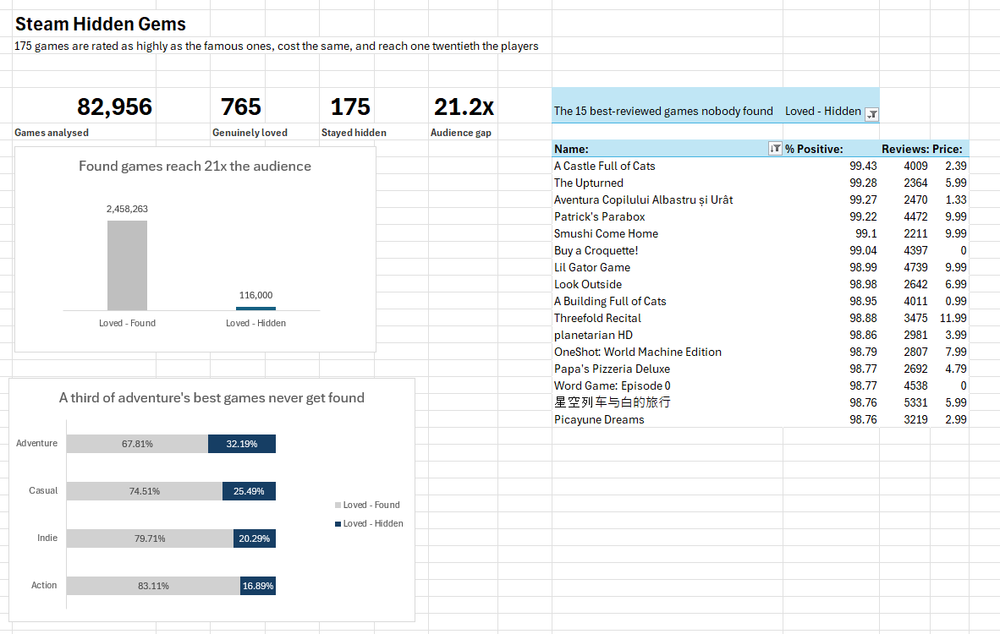

Steam Hidden Gems: an Excel dashboard

"Genuinely loved" means 2,000 or more reviews and 95% or better positive. The review count matters. A game with nine reviews and a perfect score tells you nothing.
Of those 765 loved games, 175 never found an audience. That is 22.9%. Roughly one in four games that people love stays unknown.
The question
A list of good cheap games is not analysis. Anyone can sort a spreadsheet.
The question worth asking is why some loved games get found and others do not. There are two possible answers.
The first: hidden games are worse. Cheaper, shorter, lower rated. If that is true, staying unknown makes sense and there is nothing to explain.
The second: they are the same. If that is true, quality does not explain anything, and being found is mostly luck.
What I found
| Price | Rating | Hours played | Audience | |
|---|---|---|---|---|
| Loved and found | $7.67 | 96.6% | 10.8 | 2,458,263 |
| Loved and hidden | $7.11 | 97.0% | 7.9 | 116,000 |
The hidden games cost 56 cents less. They are rated slightly higher. They run about three quarters as long. Then the audience column falls off a cliff.
The obvious objection
The first thing anyone says to this is that hidden games must be niche genres. So I checked. Each genre is measured against its own loved games, not against the other genres.
| Genre | Share that stayed hidden |
|---|---|
| Adventure | 32.2% |
| Casual | 25.5% |
| Indie | 20.3% |
| Action | 16.9% |
Genre matters some. Adventure games hide almost twice the share that action games do. It does not explain the finding away. The lowest is action at 16.9%, and that is still one in six.
Eight other genres exist in this data, each with between 1 and 18 loved games. I left them out. Below about 20 games a percentage is noise, and I would rather show four numbers I trust than twelve I do not.
What I threw away
I also cut the data by price band. Games over $20 showed a 0% hidden rate. A clean result, and a chartable one. It is worthless.
"Hidden gem" is defined in this data as costing $20 or less. A game over $20 cannot be one. The chart would have been my own filter reflected back at me, dressed up as a discovery.
The tell was how clean it was. Real findings are messy. 32% against 17% is messy. 0% against 21% is too tidy to be true, and tidiness is the warning.
So there is no price chart on the dashboard. The check that produced nothing was still worth running.
What I checked before publishing
The averages are pulled up by a few huge hits. Average audience for found games is 2.46 million, but the middle game sits at 750,000. On middle values the gap is 5x rather than 21x. Both are real. The 21x is the average gap and the 5x is the typical gap. I lead with the average and say this here so nobody has to catch me at it.
The segment counts were checked against the source before anything was built. 175 hidden, 590 found, 82,191 outside the loved group. They add to 82,956.
One column was corrupt and I nearly shipped it. Excel opened the file assuming the wrong alphabet, so 4,685 of the 82,956 game names came in as symbols. Nothing errored. Two of them reached the top 15 list before I noticed. The names were re-exported with the correct setting and pasted back.
Why it looks like this
Four numbers across the top, not eight. A number earns a spot only if it changes what you do next. Four fit on one line and get read. Eight become a wall and get skipped. The gap reads 21.2x rather than 2,458,263 against 116,000, because a ratio survives being glanced at and two seven-digit numbers do not.
The hero chart is two bars. I considered a scatter of every loved game with audience against rating, which would have been prettier and shown the spread. I turned it down because the finding is a comparison of two groups. A scatter makes the reader find the pattern. Two bars hand it over.
The tall bar is grey and the tiny one is coloured. That looks backwards until you ask what the chart is about. The story is not that famous games are big. It is that the hidden ones are almost nothing next to them. Colour goes on the subject, not the biggest shape.
The genre chart is percentages, not counts. Action has 302 loved games and Indie has 69. Counted, Action wins everything and the chart just shows which genres are popular. As a share of each genre's own loved games, every row asks the same question of itself.
The table is sorted by rating, not by review count. The claim is about quality, not popularity. Sorting by reviews would quietly re-introduce the fame the whole project is about removing.
The vertical axis is gone and the numbers sit on the bars. An axis lets you estimate a value. A label tells you it. Keeping both asks the reader to do the same job twice.
Seven things came off the page: the price chart, an axis, a legend, the labels on the grey bars, grand total rows, field buttons, and the gridlines. Everything on a page competes for the same attention. Anything not carrying meaning is taking attention from something that is.